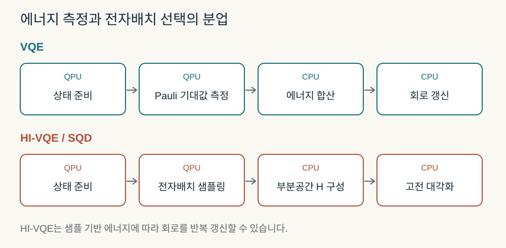

VQE의 현재와 다음 단계: 에너지 최소화, 부분공간 계산, 디지털 검증
분자와 스핀계의 바닥상태를 구하는 원리부터 DecaQ의 400스핀 사례, HI-VQE·SQD와 OLED 응용의 조건까지
분자의 에너지 차를 계산할 때 우리는 전자상관을 얼마나 정확히 다룰 수 있는지, 그리고 그 정확도를 얻는 데 시간이 얼마나 드는지를 함께 고민합니다. 양자컴퓨터는 복잡한 전자 파동함수를 담는 새로운 계산 장치를 제공하지만, 파동함수를 준비하고 에너지를 읽고 해를 개선하는 과정에도 비용이 듭니다. VQE는 이 과정을 양자 회로와 고전 최적화로 나누는 대표적인 방법입니다.
이번 글의 출발점은 Alex G. Lee의 DecaQ VQE 포스트입니다. 글은 정답을 미리 아는 400스핀 문제를 통해 미래 내결함성 양자계산의 과학 워크플로를 점검하자고 제안합니다. 그 제안을 평가하려면 VQE가 어떤 일을 하는지, 무엇이 어려운지, 최근에는 양자 장치에 맡기는 일을 어떻게 바꾸고 있는지를 먼저 살펴볼 필요가 있습니다.

내용 살펴보기
- 1. VQE는 변분 원리를 계산 절차로 옮깁니다
- 2. 분자를 큐비트 문제로 바꿀 때 이미 물리적 선택이 들어갑니다
- 3. 짧은 회로의 대가는 에너지를 여러 번 읽는 일입니다
- 4. ansatz·최적화·잡음은 서로 영향을 줍니다
- 5. DecaQ 포스트는 무엇을 제안하고 보고했나
- 6. 같은 숫자여도 쉽게 풀리는 400스핀 문제를 만들 수 있습니다
- 7. 얽힘이 필요해지는 곳을 작은 예제로 살펴봅니다
- 8. 개선 접근은 무엇을 줄이는지에 따라 비교해야 합니다
- 9. HI-VQE·SQD는 양자 장치에 ‘중요한 배치를 고르는 일’을 맡깁니다
- 10. 부분공간·분할 방법은 유망하지만 근사 대상이 바뀔 수 있습니다
- 11. OLED에서는 바닥상태 이후의 계산이 더 필요합니다
- 12. NISQ에서 FTQC로 가면 선택 기준도 바뀝니다
- 13. 이번 포스트에 대한 평가와 다음 검증
- 읽기 안내와 출처
이 리뷰는 2026년 10월 3일 확인한 자료를 사용합니다. LinkedIn 공개 본문과 DecaQ 공식 제품 설명은 열람했지만, 포스트에 첨부된 백서 전문은 공개 세션에서 읽히지 않았습니다. 따라서 백서의 정확한 해밀토니안·ansatz·실행 코드·실행시간을 확인했다고 주장하지 않습니다. 아래에서 따로 구성하는 400스핀 예제는 리뷰의 독립 설명 예제이며 DecaQ 결과의 재현이 아닙니다.
1. VQE는 변분 원리를 계산 절차로 옮깁니다
정규화된 임의의 상태에 대해 바닥상태 에너지는 기대값의 하한입니다.
여기서 H는 고정된 해밀토니안, U는 매개변수화된 회로, θ는 회전각 등의 매개변수입니다. 분자 계산에서는 Hartree–Fock 상태를 기준 상태로 자주 사용합니다. VQE는 회로가 표현할 수 있는 상태 집합 안에서 에너지를 최소화합니다. Peruzzo 등의 초기 연구는 광자 양자 프로세서와 고전 최적화를 결합해 HeH⁺의 작은 전자구조 문제를 계산했습니다.
이 관점은 Rayleigh–Ritz 계산과 친숙합니다. 차이는 시험 파동함수의 계수를 고전 메모리에 전부 저장하는 대신 회로로 상태를 준비하고, 반복 측정으로 필요한 기대값을 얻는다는 데 있습니다. 좋은 상태를 짧은 회로로 만들 수 있는지와 그 회로를 효율적으로 최적화할 수 있는지는 별도의 문제입니다. 일반 다체계의 바닥상태를 VQE가 언제나 다항 시간에 찾는다는 보장은 없습니다.
실제 장치가 준비한 밀도행렬 ρ에도 정확한 기대값 Tr(ρH) ≥ E₀는 성립합니다. 그러나 유한 샷 추정치는 통계적으로 아래쪽에 놓일 수 있고, 일부 오류 완화·외삽 추정치는 물리적인 상태의 기대값에 해당하지 않을 수 있습니다. 그래서 그래프의 한 점이 기준 에너지보다 낮다고 해서 더 좋은 변분 상태가 발견된 것으로 판단하면 안 됩니다.
2. 분자를 큐비트 문제로 바꿀 때 이미 물리적 선택이 들어갑니다
비상대론적 Born–Oppenheimer 전자구조 계산의 한 가지 표기는 다음과 같습니다. h와 g는 선택한 스핀 궤도에서의 1전자 적분과 비반대칭화된 2전자 적분입니다.
기저집합, frozen core, 활성공간을 선택한 뒤 Jordan–Wigner 또는 Bravyi–Kitaev 같은 변환으로 페르미온 연산자를 Pauli 문자열로 옮깁니다. 스핀 궤도 하나의 점유를 큐비트 하나로 나타내는 직접 부호화에서는 M개 공간 궤도가 통상 2M개 큐비트에 대응합니다. 대칭을 이용한 tapering 등으로 이를 줄일 수 있습니다.
작은 활성공간에서 CASCI와 일치하는 결과는 그 활성공간 안의 정확도를 뜻합니다. 빠진 동적 상관, 불완전한 기저집합, 구조 변화, 용매·고체 환경과 상대론 효과까지 해결한 결과로 확장할 수는 없습니다. DFT와 VQE를 비교할 때에도 같은 관측량과 계산 모델을 먼저 맞춰야 합니다. DFT 전체 분자 계산과 작은 VQE 활성공간의 총에너지 숫자를 그대로 비교하는 것은 유효한 성능 비교가 아닙니다.
3. 짧은 회로의 대가는 에너지를 여러 번 읽는 일입니다
변환한 해밀토니안을 H = Σₗ cₗPₗ로 쓰면 E = Σₗ cₗ⟨Pₗ⟩입니다. 각 Pauli 항 또는 함께 측정할 수 있는 묶음의 기대값을 반복 실험으로 추정합니다. 서로 독립적으로 항을 측정하는 단순한 경우에는
Nₗ은 항 l에 배정한 샷 수, ε는 목표 표준오차입니다. 두 번째 식은 독립 측정·알려진 분산·연속적인 샷 배정이라는 조건에서 얻는 최적 배정식입니다. 측정 묶음에서는 공분산도 고려해야 합니다. 이 식은 같은 조건에서 통계 오차를 10배 줄이면 샷이 대략 100배 필요하다는 비용 구조를 보여줍니다. 전체 Pauli 항 수만으로 총 샷 수를 결정할 수는 없습니다.
Huggins 등의 연구는 적분의 저랭크 분해와 측정 전 궤도 회전을 이용해 측정 부담을 줄입니다. Gonthier 등의 자원 분석은 작은 유기분자의 화학 정확도 계산에서도 당시의 측정 개선만으로 실용적인 이득을 얻기 어렵다고 평가했습니다. 이는 모든 분자와 모든 개선 알고리즘에 대한 불가능성 정리가 아니라 해당 분자군·정확도·하드웨어 가정의 자원 분석입니다.
VQE의 총 실행시간은 회로 한 번의 시간과 다릅니다. 에너지 평가 횟수, 기울기 측정, 샷, 상태 준비, 반복 초기화, 장치 호출 지연과 고전 처리까지 포함해야 합니다. 예를 들어 단순 parameter-shift 기울기는 조건이 맞는 한 매개변수에 대해 두 번의 이동된 회로 평가를 요구합니다. SPSA는 매개변수가 많아도 한 반복에서 두 번의 목적함수 평가로 방향을 추정할 수 있지만, 잡음과 수렴 반복 수는 별도로 평가해야 합니다.
4. ansatz·최적화·잡음은 서로 영향을 줍니다
화학적으로 설계한 UCCSD는 기준 상태에 단일·이중 여기 연산을 작용시킵니다. 전자구조와 연결하기 쉽지만 필요한 회로가 길어질 수 있습니다. 하드웨어 친화적 회로는 장치 연결성과 기본 게이트를 활용해 얕게 만들 수 있으나, 원하는 대칭과 화학 상태를 효율적으로 표현하고 찾을 수 있는지는 확인해야 합니다. 작은 에너지 변화, 좋은 회로 fidelity, 충분한 표현력은 서로 다른 지표입니다.
McClean 등의 barren plateau 연구는 일정한 무작위 회로 조건에서 기울기 신호가 큐비트 수와 함께 지수적으로 작아질 수 있음을 보였습니다. 모든 VQE가 항상 이 조건에 들어간다는 뜻은 아닙니다. 잡음 유도 barren plateau 연구에서는 회로 깊이에 따라 잡음이 학습 신호를 약화시키는 조건을 다룹니다. 화학적 초기화, 대칭 보존, 문제에 맞춘 회로와 단계적 학습은 검토할 수 있는 대응책이지만 보편적인 해결책은 아닙니다.
Quantum natural gradient는 매개변수 공간의 거리 대신 양자 상태 공간의 기하를 반영해 갱신 방향을 정합니다. 같은 회전각 변화가 상태를 얼마나 바꾸는지 고려하는 접근입니다. 추가적인 기하 정보의 측정·근사·정규화 비용이 들므로, 반복 수 감소가 총비용 감소로 이어지는지도 봐야 합니다. 최적화기의 이름만 바꾸어 사라진 기울기 정보를 되살릴 수는 없습니다.
오류 완화도 편향 감소와 분산 증가를 함께 평가해야 합니다. 대칭 검증은 잘못된 입자수 결과를 걸러낼 수 있지만, 버린 샷도 비용입니다. 입자수와 S_z를 보존했다고 S²의 정확한 스핀 고유상태가 보장되는 것도 아닙니다. 오류 완화 후 기준값과 가까워진 에너지, 사용한 총 샷, 선택률과 불확실성을 함께 보고해야 합니다.
5. DecaQ 포스트는 무엇을 제안하고 보고했나
공개 포스트는 VQE를 미래 FTQC 개발의 과학 워크플로 시험으로 제안합니다. 해밀토니안 구성, 매개변수 전달, 에너지 평가, 최적화, 결과와 입력 자료의 연결이 제대로 이루어졌는지 점검하는 목적입니다. BV·DJ·IPE·QPE·QAOA도 각각 다른 기능을 시험하는 참조 작업으로 제시합니다. 아래 수치는 작성자 보고이며 이 리뷰의 독립 실행 결과가 아닙니다.
| 공개 본문의 항목 | 보고값 | 읽을 때 확인할 조건 |
|---|---|---|
| 합성 스핀 격자 | 20×20, 최대 폭 400 | 회로·모델 폭과 물리 QPU 큐비트는 구분 |
| 변분 매개변수 | 400 | 독립성, 주기적 동치와 실제 탐색 방식 |
| 결합 스핀 쌍 | 760 | 연결 구조·결합 부호·frustration |
| 1체·2체 X/Z 항 | 3,840 | 계수와 전체 연산자 구조 |
| 알려진 바닥상태 에너지 | −780 | 포스트가 별도 물리 단위를 제시하지 않음 |
| 반환 에너지·오차 | −780, 0 | 수치 정밀도·허용오차·평가 규약 |
| 알려진 최적 매개변수와 일치 | 400/400 | 알려진 해가 최적화 입력과 분리됐는지 |
| 전역 조밀한 상태벡터 | 2⁴⁰⁰ 상태벡터를 만들지 않았다고 보고 | 사용한 표현의 적용 범위와 계산 복잡도 |
정답을 아는 시험 문제는 매우 유용합니다. 부호, 큐비트 순서, 에너지 상수, 매개변수 전달을 잘못 처리하면 최적화가 수렴해도 다른 문제를 푼 것이 될 수 있습니다. 입력·출력 연결 기록은 이런 오류를 추적하는 데 도움이 됩니다. 다만 해와 로그를 연결했다는 사실만으로 계산의 정확성과 어려운 문제에서의 성능이 독립적으로 증명되지는 않습니다.
DecaQ 공식 사이트는 현재 용량을 지원되는 profile에 한정하고, 연산자·정밀도·작업 제한이 알고리즘 계열에 따라 달라진다고 명시합니다. 9월 29일 회사 보도자료는 범용 고전 하드웨어에서 물리 큐비트나 QPU 없이 실행한다고 설명합니다. 따라서 ‘400 logical qubits’라는 제품 용어를 오류정정된 400개 QPU 논리 큐비트의 실증으로 읽을 근거는 없습니다. 이 리뷰는 해당 결과를 지원되는 구조의 고전 하드웨어 기반 디지털 계산·워크플로 사례로 분류합니다. 실제 QPU VQE·오류정정·양자 우위를 입증한 자료는 제시되지 않았습니다. 구체적인 엔진 분류와 임의의 회로에 대한 적용 범위는 공개 본문만으로 확정할 수 없습니다.
포스트의 참조 작업 구분은 소프트웨어 시험 설계로 읽으면 명확해집니다. BV·DJ는 입력 함수와 반환 답의 의미를, IPE는 측정 결과에 따른 후속 제어를, QPE는 위상 정보와 역 QFT 처리를, QAOA·VQE는 목적함수와 최적화 연결을 시험합니다. 이런 검사에서 발견할 수 있는 오류는 큐비트 순서·위상 부호·제어 분기·에너지 상수처럼 구체적입니다. 고전 엔진의 의미 검사와 실제 장치의 양자 상태·논리 게이트 검증에는 서로 다른 증거가 필요합니다. FTQC 공학의 일부를 점검할 참조 작업이라는 제안은 타당하지만, 이를 하드웨어 개발의 가속 실증으로 평가하려면 개발시간이나 오류 발견율 같은 별도 지표가 필요합니다.
6. 같은 숫자여도 쉽게 풀리는 400스핀 문제를 만들 수 있습니다
큐비트 수와 Pauli 항 수가 계산 난이도를 결정하지 않는다는 점을 직접 확인해 보겠습니다. 다음은 DecaQ 해밀토니안을 추정한 것이 아니라, 공개 숫자만으로 난이도를 결론 낼 수 없음을 보이는 리뷰의 반례입니다.
각 사이트 i에서 0 < αᵢ < π/2인 알려진 각도를 고르고 Qᵢ = cos(αᵢ)Zᵢ + sin(αᵢ)Xᵢ로 정의합니다. 열린 경계의 정사각 격자에서
20×20 격자는 N=400개 사이트와 2×20×19=760개 최근접 결합을 갖습니다. 일반적인 αᵢ를 사용하면 각 1체 항에서 X와 Z가 두 개, 각 2체 항에서 XX·XZ·ZX·ZZ가 네 개 생깁니다. 전체 Pauli 항 수는 2×400 + 4×760 = 3,840입니다.
하지만 전체 연산자는 모든 사이트의 Qᵢ를 같은 기저로 대각화하면 간단해집니다. Qᵢ와 Qⱼ는 서로 다른 사이트에서 작용하므로 교환합니다. 이 모델은 국소 회전으로 고전적인 ferromagnetic Ising 모델에 대응하고, h와 J가 양수이므로 모든 Qᵢ의 고유값이 +1인 곱상태가 바닥상태입니다.
독립적인 R_y(θᵢ) 곱상태를 쓰면 에너지는
θᵢ=αᵢ에서 정확한 최솟값에 도달합니다. 400개 최적 매개변수를 알고, 3,840개 X/Z Pauli 항을 갖고, 전역 상태벡터 없이 에너지 −780을 얻는 조건이 모두 충족됩니다. 에너지 한 번의 평가는 O(N+결합 수)의 산술로 가능합니다. 여기서 특정 최적화기가 모든 초기값에서 빠르게 이 해를 찾는다는 추가 주장을 하지는 않습니다.
이 예제의 작은 2×2 격자는 16×16 조밀 행렬을 직접 대각화해 분석식과 대조했고, 400스핀 경우에는 항 수와 곱상태 에너지를 계산했습니다. 공개 계산 코드를 함께 제공합니다. 400스핀 결과는 분석적으로 풀리는 설명 예제의 검사이며, DecaQ 엔진이나 알려지지 않은 양자 다체계를 검증한 결과가 아닙니다.
일반적으로 상태벡터를 저장하지 않는 계산은 좋은 설계입니다. tensor network, stabilizer 계산, 국소 관측량의 causal cone, 구조화된 해석식도 이를 할 수 있습니다. 그 사실을 양자 우위의 증거로 쓰려면, 어떤 입력 집합에서 어떤 표현이 유효하며 강한 고전 기준선과 비교했을 때 총비용이 어떻게 다른지를 추가로 보여야 합니다.
7. 얽힘이 필요해지는 곳을 작은 예제로 살펴봅니다
독립 스핀 회전만으로 충분한 계에서 좋은 결과를 얻었다고 모든 계에 같은 방법을 사용할 수 있는 것은 아닙니다. 두 스핀의 다음 해밀토니안을 생각해 보겠습니다. 에너지 단위는 결합 J=1로 정하고 g≥0입니다.
일반적인 g>0의 바닥상태는 얽혀 있습니다. 같은 각도의 실수 곱상태를 최적화하면 이 계의 최적 곱상태 에너지는 g≤1에서 −1−g², g≥1에서 −2g입니다. 반면 Φ⁺=(|00⟩+|11⟩)/√2와 Ψ⁺=(|01⟩+|10⟩)/√2를 사용한 cos(t)Φ⁺+sin(t)Ψ⁺는 E(t)=−cos(2t)−2g sin(2t)를 갖고 정확한 최솟값을 표현합니다.

직접 바꿔 보는 두 스핀의 에너지
설명용 모델 H=−ZZ−g(XI+IX), J=1. θ 대신 얽힌 시험 상태의 각도 t를 조절합니다. 샷·장치 잡음 없이 분석식으로 계산하며, 초기 g=0.5와 t=0.25는 리뷰의 예시값입니다.
| 상태·공간 | E / J | E₀ 대비 오차 |
|---|---|---|
| 정확한 바닥상태 | — | — |
| 최적 곱상태 | — | — |
| 현재 얽힌 시험 상태 | — | — |
| 부분공간 |00⟩, |11⟩ | — | — |
점은 현재 시험 상태, 곡선은 E(t), 점선은 정확한 E₀입니다. 최적화 버튼은 t*=½ arctan(2g)를 대입합니다. 작은 시스템의 해석적 예제이며 QPU 실행이나 회사 성능 측정이 아닙니다.
이 예제는 두 가지 선택을 연결합니다. 표준 VQE는 회로가 필요한 얽힌 상태를 표현할 수 있도록 해야 합니다. 부분공간 방법은 필요한 기저 상태를 선택하고 그 안에서 계수를 다시 최적화해야 합니다. 예를 들어 |00⟩과 |11⟩만 남긴 부분공간은 이 모델에서 에너지 −1을 주며, transverse-field가 연결하는 |01⟩·|10⟩를 빠뜨린 대가를 치릅니다. 샷을 늘려도 선택한 공간을 바꾸지 않으면 그 오차는 사라지지 않습니다.
8. 개선 접근은 무엇을 줄이는지에 따라 비교해야 합니다
| 접근 | 바꾸는 계산 | 기대할 이점 | 남는 부담 |
|---|---|---|---|
| UCCSD·대칭 보존 회로·화학적 초기화 | 시험 상태와 시작점 | 화학·스핀 정보 활용 | 회로 깊이, 활성공간·상관 근사 |
| ADAPT-VQE·qubit-ADAPT 계열 | 연산자를 순차 선택 | 불필요한 회로·매개변수 축소 | 연산자 pool의 기울기·선택 측정 |
| 저랭크 분해·측정 묶음·샷 배정 | 에너지 추정 | 측정 횟수·분산 감소 | 기저 회전과 공분산·추정 비용 |
| QNG·SPSA·단계별 최적화 | 갱신 규칙 | 문제별 수렴 개선 | 기하 측정·잡음·초기화 의존성 |
| 대칭 검증·오류 완화 | 추정 편향 | 일부 장치 오차 감소 | 샷 손실·분산·모델 의존성 |
| iQCC·부분계 분할·embedding | 연산자 또는 계산 대상 | 양자 회로·레지스터 부담 분산 | 변환 해밀토니안 증가·경계 상관 |
| QSE·Krylov 방법 | 비직교 상태의 부분공간 | 상관 보정·여기상태 추출 | H·overlap 행렬 측정과 수치 안정성 |
| QSCI·SQD·HI-VQE | 전자배치 선택과 고전 대각화 | 양자 에너지 측정 부담 전환 | 샘플 품질·공간 크기·고전 메모리 |
ADAPT-VQE는 고정된 큰 ansatz를 처음부터 최적화하는 대신, 에너지 감소에 도움이 되는 연산자를 선택해 회로를 늘립니다. 연산자 pool을 검사하는 비용을 포함해야 하므로 가장 짧은 최종 회로가 언제나 가장 빠른 전체 계산을 의미하지는 않습니다. 원 연구의 분자 사례는 수치 시뮬레이션이며, 모든 분자에서의 비용 우위가 입증된 것은 아닙니다.
iQCC는 반복적인 유니터리 변환을 통해 해밀토니안을 갱신하는 방향을 취합니다. 파동함수 쪽 회로 부담을 줄이는 과정에서 고전적으로 다뤄야 할 연산자 항이 늘 수 있습니다. CPU/GPU에서 실행한 iQCC 에뮬레이션과 QPU 실행은 별도 실험으로 읽어야 합니다. 이 문제는 기존 OLED iQCC 리뷰와도 연결됩니다.
9. HI-VQE·SQD는 양자 장치에 ‘중요한 배치를 고르는 일’을 맡깁니다
표준 VQE에서는 장치가 준비한 상태의 에너지를 양자 측정으로 얻습니다. QSCI·SQD·HI-VQE 계열에서는 장치에서 전자배치에 해당하는 bitstring을 샘플링하고, 선택한 배치들 사이의 해밀토니안 행렬을 고전적으로 구성·대각화합니다. 출력 파동함수의 계수는 이 대각화가 정합니다.

상한은 동일한 H의 올바른 부분공간을 사용하고 행렬·대각화가 충분히 정확한 경우의 Rayleigh–Ritz 결과입니다. 양자 샘플에 잡음이 있어도, 유효한 부분공간에서 정확한 H를 대각화하면 그 원리는 유지됩니다. 다만 최저 에너지가 나왔다는 사실은 빠뜨린 배치의 오차나 목표 정확도 달성을 인증하지 않습니다. 일반 QSE와 달리 직교하는 전자배치를 사용하면 overlap 행렬은 항등행렬입니다.
IBM의 현재 HI-VQE 문서는 반복적인 공간 구성, 대각화 전후의 배치 선별, 선택적인 고전 확장, 회로 매개변수 갱신을 설명합니다. 회로는 전체 바닥상태 계수를 정확히 재현하기보다 유용한 배치를 잘 샘플링하도록 학습됩니다. 잘못된 입자수·spin projection을 갖는 샘플의 복구 또는 제외도 사용합니다. 이 과정이 모든 학습 병목과 샘플 누락을 없애지는 않습니다.
HI-VQE 원 논문 v2의 Table 2는 NH₃, 6-31G, 10전자·15공간궤도, 30큐비트 사례에서 199,809개 배치를 사용한 에너지 −56.29215769 Ha와 CASCI −56.29239989 Ha를 보고합니다. 두 숫자의 차이는 직접 빼면 0.24220 mHa이며, 배치 수는 CASCI의 9,018,009개 중 약 **2.216%**입니다. 이는 해당 사례의 공간 압축과 에너지 정확도를 보여줍니다. 배치 수 비율을 실행시간 가속 비율로 바꿀 수는 없습니다. 또한 에너지가 가까워도 쌍극자·전이 성질이 같은 정도로 정확하다는 보장은 없습니다.
SQD의 대규모 실험은 Heron QPU와 Fugaku를 결합했습니다. 질소·철황 클러스터에 사용한 전체 장치 큐비트는 58·45·77개입니다. Supplementary Table S1에서 [4Fe–4S]의 페르미온 부호화는 72큐비트, 보조 큐비트를 포함한 장치 사용은 77큐비트로 구분됩니다. 가장 큰 회로는 3,590개 2큐비트 게이트를 포함합니다. 가장 큰 투영·대각화는 배치당 64개 Fugaku 노드와 100개 배치를 사용했고 고전 부분공간 차원은 최대 1억입니다. ‘정확 대각화 규모를 넘었다’와 ‘모든 고전 근사법보다 빠르다’는 다른 주장입니다.
이 계열을 평가할 때에는 HCI·SHCI·CIPSI 같은 selected CI, DMRG, 적절한 coupled-cluster·다중참조 방법과 비교해야 합니다. 같은 목표 정확도·전체 실행시간에서 QPU 샘플을 고전 선택으로 교체해도 결과가 유지되는지 확인하는 ablation이 유용합니다. 공간 크기를 늘릴 때의 수렴, 여러 샘플 batch의 변동, 샷과 고전 메모리도 함께 보고해야 합니다.
10. 부분공간·분할 방법은 유망하지만 근사 대상이 바뀔 수 있습니다
QSE는 기준 상태에 연산자를 작용시켜 주변 상태들을 만들고 Hᵢⱼ와 Sᵢⱼ를 측정한 뒤 Hc=ESc를 풉니다. 여기상태와 상관 보정을 구할 수 있지만, 작은 overlap 고유값이 측정 오차를 증폭할 수 있어 선형종속 제거와 cutoff 의존성을 확인해야 합니다. CASH-QSE 기존 리뷰는 고전 기준 상태와 양자 보정을 나누는 사례를 자세히 다룹니다.
Sample-Based Krylov Diagonalization은 시간 진화로 만든 Krylov 상태에서 얻은 샘플과 고전 대각화를 결합합니다. 논문의 다항 수렴 주장은 초기 겹침 등 Krylov 방법의 가정과 바닥상태의 희소성 조건에 의존합니다. 일반적인 임의 다체계에 대한 무조건적인 효율성 보장은 아닙니다.
2026년 9월 29일 공개된 Deep QSCI preprint는 벤젠 이합체의 단량체 계산을 재사용하며 레지스터 요구를 40에서 20큐비트로 줄입니다. Classiq 회로를 무잡음 고전 시뮬레이션한 결과입니다. 6-31G**·4.0 Å에서 모델 상호작용 에너지는 −0.908 kcal/mol, 비교 CCSD(T)는 −1.139 kcal/mol입니다. 서로 다른 Hamiltonian 구성·BSSE 처리를 사용하므로 정량 정확도 우위의 비교가 아닙니다. 중성 단량체 공간에서는 단량체 간 전하이동 배치가 빠지며, 변분 상한은 모델 Hamiltonian에만 적용됩니다. OLED의 exciplex·CT 상태로 확장하려면 특히 이 누락을 점검해야 합니다.
11. OLED에서는 바닥상태 이후의 계산이 더 필요합니다
OLED 재료에서는 S₀ 하나의 총에너지보다 S₁·T₁, ΔE_ST, 전하이동과 국소여기 성격, SOC와 진동 결합, 구조·환경에 따른 변화가 중요합니다. 바닥상태 VQE가 잘 작동했다는 결과만으로 여기상태 수명이나 RISC를 예측할 수는 없습니다. VQD는 이미 찾은 상태와의 겹침에 벌점을 주어 여기상태를 찾습니다. QSE·state-averaged 방법 등도 후보가 되지만 추가 측정과 상태 선택 문제가 생깁니다.
예를 들어 ΔE_ST = E(S₁)−E(T₁)의 오차는 두 상태의 오차 상관에 의존합니다.
약 1.6 mHa라는 화학 정확도의 관례는 대략 0.044 eV에 해당합니다. 이 규모가 모든 TADF 문제의 ΔE_ST·상태 순서·반응 속도에 충분하다는 뜻은 아닙니다. 두 상태에 따로 허용한 오차가 에너지 차에서 더해질 수도 있고 상쇄될 수도 있습니다. 같은 활성공간·궤도·대칭 처리와 균형 잡힌 상태 기술을 사용해야 합니다.
연구 적용안으로는 TDDFT/TDA와 고전 다중참조 계산이 불안정해지는 작은 후보군을 먼저 찾고, 그 후보의 관련 활성공간을 VQE 또는 샘플 기반 부분공간 계산으로 검토하는 방식이 합리적입니다. SOC가 중요한 PhOLED에서는 상대론적 모델과 상태 간 SOC 행렬원소가 추가로 필요합니다. 단일 분자의 총에너지 개선을 고체 속 발광 효율이나 열화 안정성으로 곧바로 옮기지 않아야 합니다. 이 단락은 검증된 OLED 양자 우위 사례의 소개가 아닌 후속 연구 제안입니다.
12. NISQ에서 FTQC로 가면 선택 기준도 바뀝니다
VQE는 짧은 coherent evolution을 사용하고 측정을 반복하는 선택입니다. QPE는 상태 준비와 controlled evolution에 더 깊은 회로를 요구하는 대신 에너지 분해능을 coherent하게 확보합니다. FTQC가 발전하면 좋은 초기 상태를 변분·부분공간 방법으로 준비한 뒤 QPE로 정밀 에너지를 얻는 결합도 검토할 수 있습니다. 초기 상태의 목표 고유상태 겹침, spectral gap, Hamiltonian simulation 비용과 물리적 오류정정 자원이 함께 중요해집니다.
따라서 미래 VQE의 가치를 단순한 종착점으로 정할 필요는 없습니다. 문제를 정의하고 짧은 상태 준비를 설계하며 상관이 중요한 부분을 찾는 연구 도구로도 역할이 있습니다. FTQC 워크플로 시험으로 사용할 때에는 논리 회로의 의미 검사에 더해 오류정정·디코딩·논리 오류율·비Clifford 자원·실시간 제어를 따로 검증해야 합니다. 알려진 해를 복원하는 고전 디지털 시험이 이 물리적 검증을 대체하지는 않습니다.
13. 이번 포스트에 대한 평가와 다음 검증
DecaQ의 제안에서 유용한 부분은 과학 모델에서 결과까지 이어지는 계산을 정답이 알려진 참조 문제로 점검한다는 점입니다. 공개 본문은 최대 폭과 결과 일치를 보고하지만, 일반적인 얽힌 계에 대한 처리 능력·총비용·독립 재현을 판단하는 데 필요한 세부 정보는 충분하지 않습니다. 첨부 백서 전문을 확보하면 이 평가를 더 구체화할 수 있습니다.
후속 평가에서는 원 해밀토니안과 계수, 지원 회로·연산자 범위, 알려진 해의 유도와 최적화 입력 분리, 전체 에너지 곡선과 임의 시험점, 여러 초기값과 실패 사례, 런타임·메모리·정밀도를 공개하는 것이 유용합니다. 국소 회전으로 풀리는 시험에서 출발해, 작은 비가환·frustrated 문제와 상관이 알려진 화학 활성공간으로 범위를 넓히고 exact diagonalization·tensor network·selected CI 등과 대조할 수 있습니다. 입력 파일과 실행 로그를 연결하는 기록은 이 결과를 추적하는 근거로 함께 남겨야 합니다.
VQE 연구의 최근 흐름은 회로만 개선하는 데 머물지 않습니다. 에너지 측정, 상태 탐색, 중요한 전자배치의 선택과 고전 대각화 사이에서 계산을 다시 나누고 있습니다. 분자·재료 연구에서 필요한 판단은 이 분업이 목표 물성의 오차와 전체 비용을 실제로 줄였는지입니다. 이번 포스트는 그 워크플로 검증의 출발점으로 읽을 수 있으며, 일반적인 400큐비트 양자계산이나 FTQC의 실증으로 확대해서 읽을 자료는 아닙니다.
읽기 안내와 출처
처음 읽는다면 Peruzzo의 초기 VQE 논문과 Tilly의 방법 리뷰로 전체 구조를 잡고, Gonthier의 측정 자원 분석을 읽는 순서를 권합니다. 이후 ADAPT-VQE와 HI-VQE·SQD를 비교하면 회로를 줄이는 접근과 양자 측정의 역할을 바꾸는 접근이 구분됩니다. 여기상태·OLED가 목적이라면 VQD·QSE와 Deep QSCI의 모델 경계를 함께 살펴보면 좋습니다.
- Alex G. Lee — DecaQ VQE 공개 포스트. 공개 본문 열람; 첨부 백서 전문 미열람.
- DecaQ 공식 제품·지원 범위. 2026-10-03 열람; 기업 설명.
- Peruzzo et al., A variational eigenvalue solver on a quantum processor. Nature Communications 5, 4213 (2014), DOI: 10.1038/ncomms5213.
- Tilly et al., The Variational Quantum Eigensolver: a review of methods and best practices. Physics Reports 986 (2022), DOI: 10.1016/j.physrep.2022.08.003.
- Bravyi et al., Tapering off qubits to simulate fermionic Hamiltonians.
- Huggins et al., Efficient and Noise Resilient Measurements for Quantum Chemistry. npj Quantum Information 7, 23 (2021), DOI: 10.1038/s41534-020-00341-7.
- Gonthier et al., Measurements as a roadblock to near-term practical quantum advantage in chemistry. Physical Review Research 4, 033154 (2022), DOI: 10.1103/PhysRevResearch.4.033154.
- McClean et al., Barren plateaus in quantum neural network training landscapes. Nature Communications 9, 4812 (2018).
- Wang et al., Noise-Induced Barren Plateaus in Variational Quantum Algorithms.
- Stokes et al., Quantum Natural Gradient. Quantum 4, 269 (2020).
- Grimsley et al., An adaptive variational algorithm for exact molecular simulations. Nature Communications 10, 3007 (2019).
- Ryabinkin et al., Iterative Qubit Coupled Cluster approach with efficient screening of generators.
- Pellow-Jarman et al., HI-VQE, arXiv:2503.06292v2. 방법과 NH₃ Table 2 대조; preprint.
- IBM Quantum — HI-VQE Chemistry 공식 문서. 현재 구현·선별·복구 과정 설명.
- Robledo-Moreno et al., Chemistry Beyond the Scale of Exact Diagonalization on a Quantum-Centric Supercomputer. Methods·Supplementary Table S1 대조.
- McClean et al., Hybrid Quantum-Classical Hierarchy for Mitigation of Decoherence and Determination of Excited States.
- Yu et al., Quantum-Centric Algorithm for Sample-Based Krylov Diagonalization. v3의 조건부 수렴·장치 실행 구분.
- Tajima, Sato et al., Deep QSCI for the benzene dimer. 2026-09-29 preprint; Sec. V·VI·VII와 Table 2 대조.
- Higgott et al., Variational Quantum Computation of Excited States. Quantum 3, 156 (2019).
- DecaQ Cloud Beta 2 회사 보도자료. 2026-09-29, EIN Presswire 배포. 독립 검증이나 NASA 발표가 아닙니다.
과학 글 감수: 과장된 규모·가속 표현과 기계적인 대비를 줄였습니다. 포스트의 모든 규모·에너지 수치, 논문의 활성공간·단위·실행 경계를 보존했습니다. DecaQ 백서 전문과 엔진의 독립 재현은 남은 확인 사항입니다.